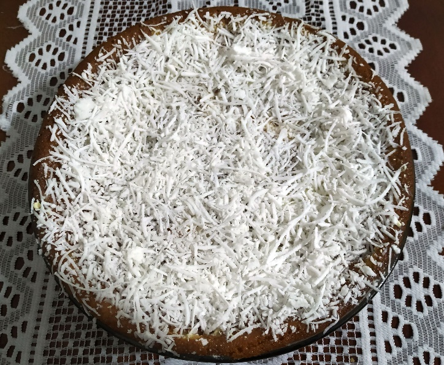

Xodó da Bahia
Ingredientes
- Para a massa:
- 4 ovos
- 2 copos de açúcar
- 2 copos de farinha de trigo
- 1 copo de suco de laranja
- 2 colheres de fermento
- Para jogar por cima:
- 1 vidro de leite de coco
- 1 copo de leite
- 1 copo de leite condensado
- 2 colheres de manteiga
- 1 pacote de coco ralado ou 200 g de coco fresco ralado
Modo de Preparo
Bater na batedeira as claras em neve e reservar. Bater na batedeira as gemas com o açúcar e aos poucos ir adicionando o suco de laranja e a farinha de trigo. Acrescentar as claras em neve e o fermento. Untar uma forma e colocar para assar. Depois de assado furar o bolo com um garfo e despejar por cima o leite de coco, o leite de vaca e o leite condensado batido previamente com a manteiga. Por último despejar o coco ralado. Conservar em geladeira.
